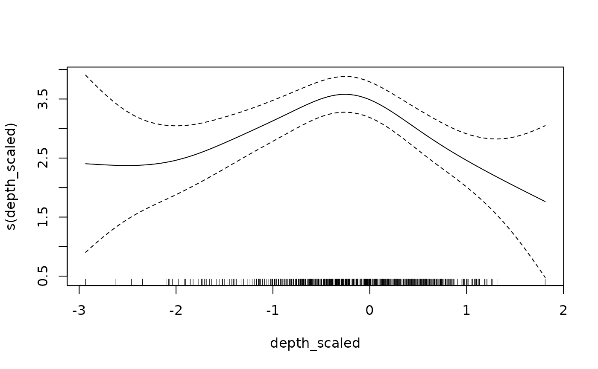

Deprecated: use visreg::visreg(). See visreg_delta() for examples.
Usage
plot_smooth(
object,
select = 1,
n = 100,
level = 0.95,
ggplot = FALSE,
rug = TRUE,
return_data = FALSE
)Arguments
- object
An
sdmTMB()model.- select
The smoother term to plot.
- n
The number of equally spaced points to evaluate the smoother along.
- level
The confidence level.
- ggplot
Logical: use the ggplot2 package?
- rug
Logical: add rug lines along the lower axis?
- return_data
Logical: return the predicted data instead of making a plot?
Details
Note:
Any numeric predictor is set to its mean
Any factor predictor is set to its first-level value
The time element (if present) is set to its minimum value
The x and y coordinates are set to their mean values
Examples
d <- subset(pcod, year >= 2000 & density > 0)
pcod_spde <- make_mesh(d, c("X", "Y"), cutoff = 30)
m <- sdmTMB(
data = d,
formula = log(density) ~ s(depth_scaled) + s(year, k = 5),
mesh = pcod_spde
)
plot_smooth(m)
#> This function may be deprecated.
#> Consider using `visreg::visreg()` or `visreg_delta()`.
#> See ?visreg_delta() for examples.
